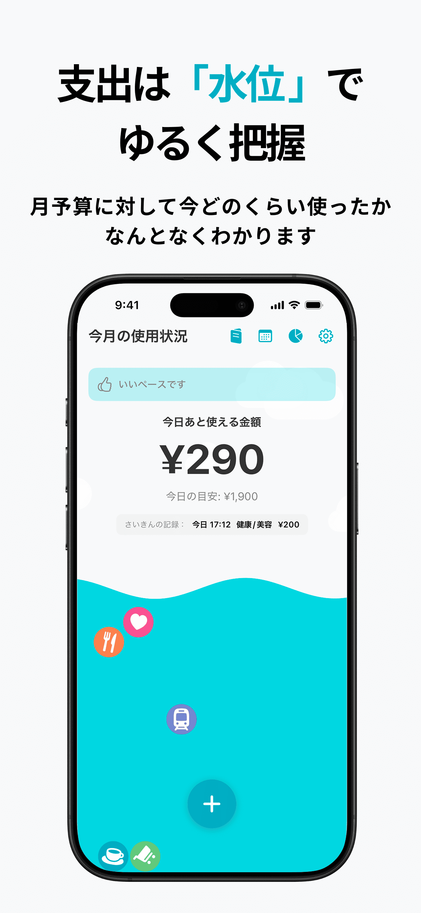
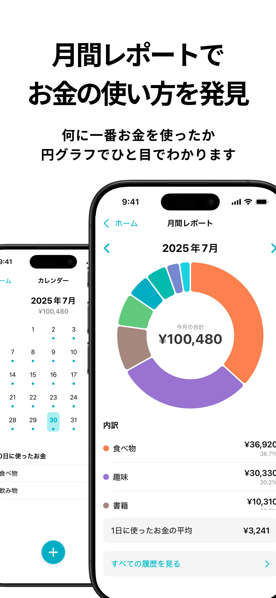

🖼️アプリの魅力
完璧じゃなくていい
入力は3秒で完了
楽しいふりかえり

お金の使い方を発見
あなただけの空間
☀️Roughlyらしい使い方
三日坊主でも大丈夫！
毎日入力できなくてもOK。
週末や気が向いた時にまとめて振り返るくらいが、心地よいペースかもしれません。
記録は「だいたい」で
細かい金額は気にせず「食べ物 1000円」のようにざっくり記録しましょう。
大切なのは続けることです！
使ったお金を祝ってみる
支出は「減ったもの」ではなく「得たもの」の対価。
お金を使った自分を褒めてあげましょう！
❓よくある質問
いいえ、できません。
Roughlyは「だいたい」を把握することを目的としているため、あえて連携機能を省き、手入力のシンプルさを重視しています。
はい、CSVファイルインポート/アウトプット機能がございます。
CSVファイルとしてデータを書き出し、手動で読み込むことも可能です。
申し訳ありません、現在のところiOS版のみの提供となっております。
支出の履歴画面から削除可能です。
またカレンダー画面や編集画面からも個別に削除することも可能です。
✉️お問い合わせ
ご意見・ご感想や不具合のご報告は、下記までお気軽にご連絡ください。
X: @2n0k460